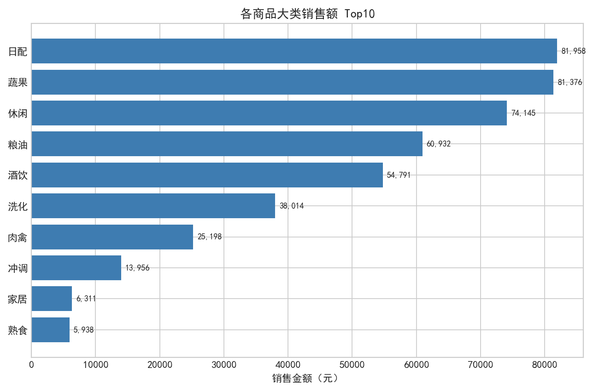
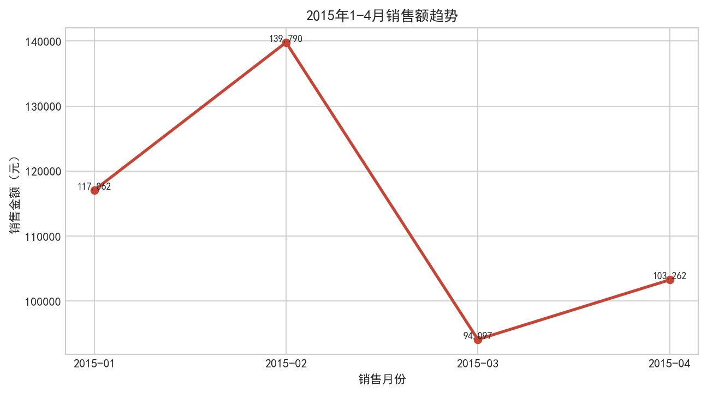
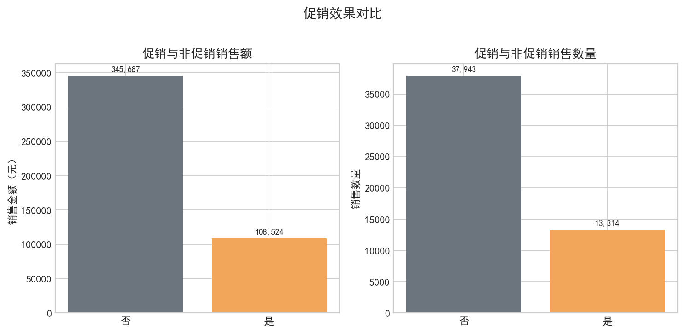
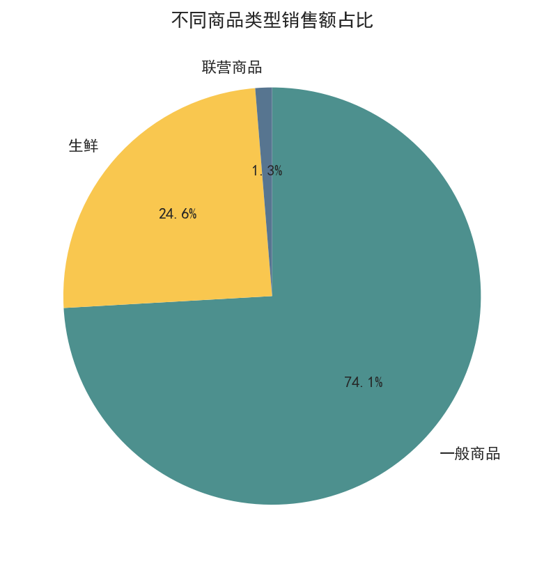

学生姓名：杨文天
本项目基于超市 2015 年 1 月至 4 月的销售明细数据，目的是从销售规模、品类结构、月份变化和促销效果等角度发现经营特点，为门店备货、促销安排和品类优化提供数据支持。
本次数据共 42726 条销售记录，覆盖 2612 位顾客、6138 个商品，统计期内总销售额为 454,210.62 元，总销售数量为 51,256.56。
下面按照“数据读取与预处理、描述统计、可视化分析、分析结论”的流程展开。代码保留完整计算过程，图表后给出对应分析说明。
import pandas as pd
import matplotlib.pyplot as plt
plt.rcParams["font.sans-serif"] = ["Microsoft YaHei", "SimHei", "Arial Unicode MS"]
plt.rcParams["axes.unicode_minus"] = Falsedata_path = "data/supermarket_1.csv"
df = pd.read_csv(data_path)
if "Unnamed: 0" in df.columns:
df = df.drop(columns=["Unnamed: 0"])
for col in ["销售数量", "销售金额", "商品单价"]:
df[col] = pd.to_numeric(df[col], errors="coerce")
df["销售日期_转换"] = pd.to_datetime(
df["销售日期"].astype(str),
format="%Y%m%d",
errors="coerce"
)
df["销售月份_文本"] = df["销售月份"].astype(str).str[:4] + "-" + df["销售月份"].astype(str).str[4:]
df.head()basic_info = {
"记录数": len(df),
"字段数": df.shape[1],
"顾客数": df["顾客编号"].nunique(),
"商品数": df["商品编码"].nunique(),
"总销售数量": df["销售数量"].sum(),
"总销售金额": df["销售金额"].sum(),
"日期转换异常数": df["销售日期_转换"].isna().sum()
}
basic_info读取数据后删除原 CSV 中多余的 `Unnamed: 0` 索引列，并将销售数量、销售金额、商品单价转为数值类型。销售日期按 `%Y%m%d` 转换，其中 `20150229` 不是合法日期，转换异常共 2 条；这些记录数量很少，因此保留原始销售月份字段继续做月度分析。
category_sales = df.groupby("大类名称")["销售金额"].sum().sort_values(ascending=False)
category_sales.head(10)
从图中可以看出，销售额主要集中在日配、蔬果、休闲、粮油、酒饮等大类。门店应优先保证这些高贡献品类的库存稳定，同时结合货架位置和促销活动提升购买转化。
month_sales = df.groupby("销售月份_文本")["销售金额"].sum()
month_sales
从 2015 年 1-4 月看，2015-02 销售额最高，2015-03 销售额最低。销售波动说明门店运营需要按月份提前做备货计划，并关注节假日、季节和促销安排对销售的影响。
promo_stats = df.groupby("是否促销")[["销售金额", "销售数量"]].sum()
promo_stats
促销销售额占总销售额约 23.9%，说明促销对销售有贡献，但非促销销售仍占主导。后续可把促销资源集中到高毛利、高复购或需要清库存的商品，避免促销投入过于分散。
type_sales = df.groupby("商品类型")["销售金额"].sum().sort_values(ascending=False)
type_sales
商品类型中，一般商品 的销售额占比最高，是门店收入的主要基础。生鲜类销售额也有明显贡献，应重视保鲜、损耗控制和日常陈列；联营商品占比较低，可结合场地和利润贡献评估是否优化。
本次分析先从数据清洗入手，再围绕销售额、品类、月份和促销四个维度进行可视化。分析过程中发现，日期字段存在少量非法日期，因此实际分析时不能盲目直接转换日期，而要先检查异常值。通过图表可以更直观地看到核心销售来源和月份波动，后续如果继续深入，可以增加客单价、复购情况、单品贡献和促销前后对比等分析，使经营建议更加细化。